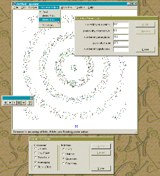
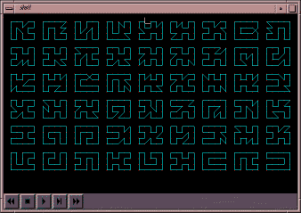
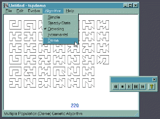

{kind=link}
{kind=link}

http://lancet.mit.edu/~mbwall/phd
Here are some sample screen shots of GAlib examples and of programs derived from GAlib examples.
|
Maximize a continuous function in two variables. The function looks like ripples in a pond when drawn in three dimensions. The maximum value is located at the center of the ripples. The example included with GAlib shows this problem in two dimensions - the three dimensional example is a slight modification to the GAlib example using an OpenGL widget rather than a 2-D X drawing area. |
|  | Maximize a continuous function in two variables. Same as the previous example, but this one is plotted in two dimensions in a simple application built with visual c++. This version of the program lets you change crossover, mutation, representation, algorithm, and parameters on the fly. |
|  | This program uses a genome derived from the GAListGenome class and solves a simple case of the travelling salesman problem. The image shows a population of solutions, with the best solutions at the bottom left of the window. Note that there are more than one optimal solution, and that the deterministic crowding genetic algorithm has found more than one of these solutions. |
|  | A windows version of the traveling salesperson problem. In this demo you may select the type of evolution and quickly see the impact that has on the quality and number of solutions found. |
|
This program solves a class of resource-constrained scheduling problems. It uses its own custom genome that is described in the doctoral thesis of Matthew Wall at http://lancet.mit.edu/~mbwall/phd
|